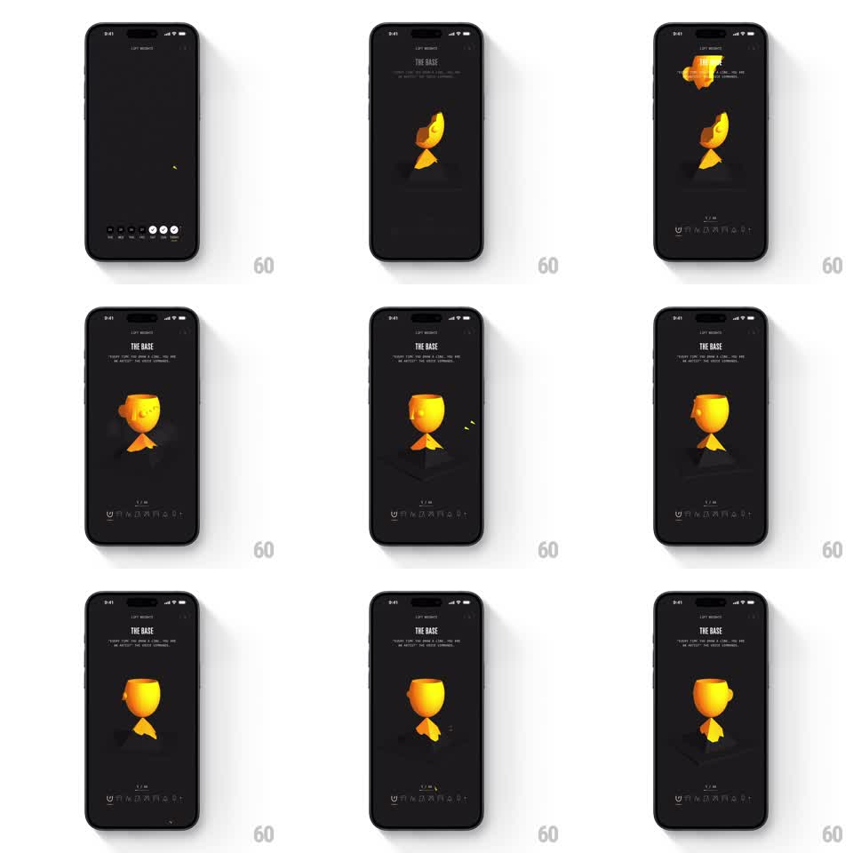

Media
Frame-by-frame

Rebuild this animation 1:1: Not Boring Habits' reward unlock - the habit UI dims away while a golden 3D shape morphs and assembles into a spinning trophy, with the reward title sliding in beside it.

Rebuild this animation 1:1: Not Boring Habits' reward unlock - the habit UI dims away while a golden 3D shape morphs and assembles into a spinning trophy, with the reward title sliding in beside it. ## Integration Integration: stack-agnostic spec - springs given as stiffness/damping, timed motions as duration + curve; map every value to your framework and animation library of choice. ## Scene Dark reward screen: "LIFT WEIGHT" header, the title "THE BASE" with flavor copy, a golden low-poly 3D object center stage (shards assembling into a faceted trophy cup on a pedestal), and a dimmed habit-week strip at the bottom. ## Motion spec Pattern: 3D assembly morph, ~2.5s. - The screen starts with the habit UI; it dims and sinks slightly (400ms, ease-out) as the stage clears. - Golden shards tumble in from off-center (spring stiffness 200 damping 16, staggered 80ms), rotating as they fly, and snap into the trophy's silhouette piece by piece - base first, then stem, then cup. - On final assembly the trophy flares (emissive pulse, 300ms) and small gold particles burst off it (500ms, gravity falloff). - The trophy then spins slowly on its vertical axis (one revolution per 6s, continuous) with a soft floor reflection. - "THE BASE" title and copy slide in from the left (350ms, 24px, ease-out) as the flare lands; the bottom week strip fades back in dimmed. ## Calibration - Assembly reads as construction, not explosion - every shard travels toward its slot, nothing flies outward until the burst. - The spin begins only after assembly completes; a spinning half-trophy reads as a bug. ## Reduced motion Trophy fades in assembled; title fades with it. ## Don't miss - The faceted low-poly shading - the trophy catches light per facet as it turns. - The tiny "1/10" progress marker near the bottom stays visible throughout - the reward is part of a collection.